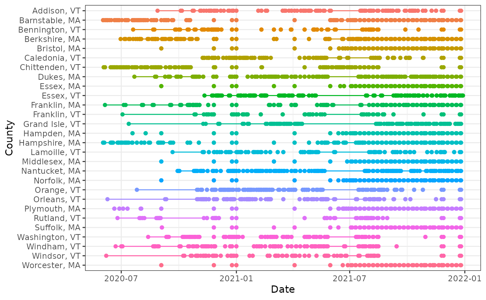

Aggregation, both time-wise and geo-wise, are common tasks when
working with epidemiological data sets. This vignette demonstrates how
to carry out these kinds of tasks with epi_df objects.
We’ll work with county-level reported COVID-19 cases in MA and VT.
library(epidatr)
library(covidcast)
library(epiprocess)
library(dplyr)
# Use covidcast::county_census to get the county and state names
y <- covidcast::county_census %>%
filter(STNAME %in% c("Massachusetts", "Vermont"), STNAME != CTYNAME) %>%
select(geo_value = FIPS, county_name = CTYNAME, state_name = STNAME)
# Fetch only counties from Massachusetts and Vermont, then append names columns as well
x <- pub_covidcast(
source = "jhu-csse",
signals = "confirmed_incidence_num",
geo_type = "county",
time_type = "day",
geo_values = paste(y$geo_value, collapse = ","),
time_values = epirange(20200601, 20211231),
) %>%
select(geo_value, time_value, cases = value) %>%
full_join(y, by = "geo_value") %>%
as_epi_df(as_of = as.Date("2024-03-20"))The data contains 16,212 rows and 5 columns.
Converting to tsibble format
For manipulating and wrangling time series data, the tsibble
already provides a whole bunch of useful tools. A tsibble object
(formerly, of class tbl_ts) is basically a tibble (data
frame) but with two specially-marked columns: an index
column representing the time variable (defining an order from past to
present), and a key column identifying a unique
observational unit for each time point. In fact, the key can be made up
of any number of columns, not just a single one.
In an epi_df object, the index variable is
time_value, and the key variable is typically
geo_value (though this need not always be the case: for
example, if we have an age group variable as another column, then this
could serve as a second key variable). The epiprocess
package thus provides an implementation of as_tsibble() for
epi_df objects, which sets these variables according to
these defaults.
library(tsibble)
xt <- as_tsibble(x)
head(xt)## # A tsibble: 6 x 5 [1D]
## # Key: geo_value [1]
## geo_value time_value cases county_name state_name
## <chr> <date> <dbl> <chr> <chr>
## 1 25001 2020-06-01 4 Barnstable County Massachusetts
## 2 25001 2020-06-02 6 Barnstable County Massachusetts
## 3 25001 2020-06-03 5 Barnstable County Massachusetts
## 4 25001 2020-06-04 8 Barnstable County Massachusetts
## 5 25001 2020-06-05 3 Barnstable County Massachusetts
## 6 25001 2020-06-06 4 Barnstable County Massachusetts
key(xt)## [[1]]
## geo_value
index(xt)## time_value
interval(xt)## <interval[1]>
## [1] 1DWe can also set the key variable(s) directly in a call to
as_tsibble(). Similar to SQL keys, if the key does not
uniquely identify each time point (that is, the key and index together
do not not uniquely identify each row), then as_tsibble()
throws an error:
head(as_tsibble(x, key = "county_name"))## Error in `validate_tsibble()`:
## ! A valid tsibble must have distinct rows identified by key and index.
## ℹ Please use `duplicates()` to check the duplicated rows.As we can see, there are duplicate county names between Massachusetts and Vermont, which caused the error.
head(duplicates(x, key = "county_name"))## # A tibble: 6 × 5
## geo_value time_value cases county_name state_name
## <chr> <date> <dbl> <chr> <chr>
## 1 25009 2020-06-01 63 Essex County Massachusetts
## 2 25011 2020-06-01 0 Franklin County Massachusetts
## 3 50009 2020-06-01 0 Essex County Vermont
## 4 50011 2020-06-01 0 Franklin County Vermont
## 5 25009 2020-06-02 74 Essex County Massachusetts
## 6 25011 2020-06-02 0 Franklin County MassachusettsKeying by both county name and state name, however, does work:
head(as_tsibble(x, key = c("county_name", "state_name")))## # A tsibble: 6 x 5 [1D]
## # Key: county_name, state_name [1]
## geo_value time_value cases county_name state_name
## <chr> <date> <dbl> <chr> <chr>
## 1 50001 2020-06-01 0 Addison County Vermont
## 2 50001 2020-06-02 0 Addison County Vermont
## 3 50001 2020-06-03 0 Addison County Vermont
## 4 50001 2020-06-04 0 Addison County Vermont
## 5 50001 2020-06-05 0 Addison County Vermont
## 6 50001 2020-06-06 1 Addison County VermontDetecting and filling time gaps
One of the major advantages of the tsibble package is
its ability to handle implicit gaps in time series
data. In other words, it can infer what time scale we’re interested in
(say, daily data), and detect apparent gaps (say, when values are
reported on January 1 and 3 but not January 2). We can subsequently use
functionality to make these missing entries explicit, which will
generally help avoid bugs in further downstream data processing
tasks.
Let’s first remove certain dates from our data set to create gaps:
# First make geo value more readable for tables, plots, etc.
x <- x %>%
mutate(geo_value = paste(
substr(county_name, 1, nchar(county_name) - 7),
name_to_abbr(state_name),
sep = ", "
)) %>%
select(geo_value, time_value, cases)
xt <- as_tsibble(x) %>% filter(cases >= 3)The functions has_gaps(), scan_gaps(),
count_gaps() in the tsibble package each
provide useful summaries, in slightly different formats.
## # A tibble: 6 × 2
## geo_value .gaps
## <chr> <lgl>
## 1 Addison, VT TRUE
## 2 Barnstable, MA TRUE
## 3 Bennington, VT TRUE
## 4 Berkshire, MA TRUE
## 5 Bristol, MA TRUE
## 6 Caledonia, VT TRUE## # A tsibble: 6 x 2 [1D]
## # Key: geo_value [1]
## geo_value time_value
## <chr> <date>
## 1 Addison, VT 2020-08-28
## 2 Addison, VT 2020-08-29
## 3 Addison, VT 2020-08-30
## 4 Addison, VT 2020-08-31
## 5 Addison, VT 2020-09-01
## 6 Addison, VT 2020-09-02
head(count_gaps(xt))## # A tibble: 6 × 4
## geo_value .from .to .n
## <chr> <date> <date> <int>
## 1 Addison, VT 2020-08-28 2020-10-04 38
## 2 Addison, VT 2020-10-06 2020-10-23 18
## 3 Addison, VT 2020-10-25 2020-11-04 11
## 4 Addison, VT 2020-11-06 2020-11-10 5
## 5 Addison, VT 2020-11-14 2020-11-18 5
## 6 Addison, VT 2020-11-20 2020-11-20 1We can also visualize the patterns of missingness:
library(ggplot2)
theme_set(theme_bw())
ggplot(
count_gaps(xt),
aes(
x = reorder(geo_value, desc(geo_value)),
color = geo_value
)
) +
geom_linerange(aes(ymin = .from, ymax = .to)) +
geom_point(aes(y = .from)) +
geom_point(aes(y = .to)) +
coord_flip() +
labs(x = "County", y = "Date") +
theme(legend.position = "none")
Using the fill_gaps() function from
tsibble, we can replace all gaps by an explicit value. The
default is NA, but in the current case, where missingness
is not at random but rather represents a small value that was censored
(only a hypothetical with COVID-19 reports, but certainly a real
phenomenon that occurs in other signals), it is better to replace it by
zero, which is what we do here. (Other approaches, such as LOCF: last
observation carried forward in time, could be accomplished by first
filling with NA values and then following up with a second
call to tidyr::fill().)
## # A tsibble: 6 x 3 [1D]
## # Key: geo_value [1]
## geo_value time_value cases
## <chr> <date> <dbl>
## 1 Addison, VT 2020-08-27 3
## 2 Addison, VT 2020-08-28 0
## 3 Addison, VT 2020-08-29 0
## 4 Addison, VT 2020-08-30 0
## 5 Addison, VT 2020-08-31 0
## 6 Addison, VT 2020-09-01 0Note that the time series for Addison, VT only starts on August 27,
2020, even though the original (uncensored) data set itself was drawn
from a period that went back to June 6, 2020. By setting
.full = TRUE, we can at zero-fill over the entire span of
the observed (censored) data.
## # A tsibble: 6 x 3 [1D]
## # Key: geo_value [1]
## geo_value time_value cases
## <chr> <date> <dbl>
## 1 Addison, VT 2020-06-01 0
## 2 Addison, VT 2020-06-02 0
## 3 Addison, VT 2020-06-03 0
## 4 Addison, VT 2020-06-04 0
## 5 Addison, VT 2020-06-05 0
## 6 Addison, VT 2020-06-06 0Explicit imputation for missingness (zero-filling in our case) can be
important for protecting against bugs in all sorts of downstream tasks.
For example, even something as simple as a 7-day trailing average is
complicated by missingness. The function epi_slide() looks
for all rows within a window of 7 days anchored on the right at the
reference time point (when before = 6). But when some days
in a given week are missing because they were censored because they had
small case counts, taking an average of the observed case counts can be
misleading and is unintentionally biased upwards. Meanwhile, running
epi_slide() on the zero-filled data brings these trailing
averages (appropriately) downwards, as we can see inspecting Plymouth,
MA around July 1, 2021.
xt %>%
as_epi_df(as_of = as.Date("2024-03-20")) %>%
group_by(geo_value) %>%
epi_slide(cases_7dav = mean(cases), before = 6) %>%
ungroup() %>%
filter(
geo_value == "Plymouth, MA",
abs(time_value - as.Date("2021-07-01")) <= 3
) %>%
print(n = 7)## An `epi_df` object, 4 x 4 with metadata:
## * geo_type = custom
## * time_type = day
## * as_of = 2024-03-20
##
## # A tibble: 4 × 4
## geo_value time_value cases cases_7dav
## * <chr> <date> <dbl> <dbl>
## 1 Plymouth, MA 2021-06-28 3 4.25
## 2 Plymouth, MA 2021-06-30 7 5
## 3 Plymouth, MA 2021-07-01 6 5
## 4 Plymouth, MA 2021-07-02 6 5.2
xt_filled %>%
as_epi_df(as_of = as.Date("2024-03-20")) %>%
group_by(geo_value) %>%
epi_slide(cases_7dav = mean(cases), before = 6) %>%
ungroup() %>%
filter(
geo_value == "Plymouth, MA",
abs(time_value - as.Date("2021-07-01")) <= 3
) %>%
print(n = 7)## An `epi_df` object, 7 x 4 with metadata:
## * geo_type = custom
## * time_type = day
## * as_of = 2024-03-20
##
## # A tibble: 7 × 4
## geo_value time_value cases cases_7dav
## * <chr> <date> <dbl> <dbl>
## 1 Plymouth, MA 2021-06-28 3 2.43
## 2 Plymouth, MA 2021-06-29 0 2.43
## 3 Plymouth, MA 2021-06-30 7 2.86
## 4 Plymouth, MA 2021-07-01 6 2.86
## 5 Plymouth, MA 2021-07-02 6 3.71
## 6 Plymouth, MA 2021-07-03 0 3.71
## 7 Plymouth, MA 2021-07-04 0 3.14Attribution
This document contains a dataset that is a modified part of the COVID-19 Data Repository by the Center for Systems Science and Engineering (CSSE) at Johns Hopkins University as republished in the COVIDcast Epidata API. This data set is licensed under the terms of the Creative Commons Attribution 4.0 International license by the Johns Hopkins University on behalf of its Center for Systems Science in Engineering. Copyright Johns Hopkins University 2020.
From the COVIDcast Epidata API: These signals are taken directly from the JHU CSSE COVID-19 GitHub repository without changes.